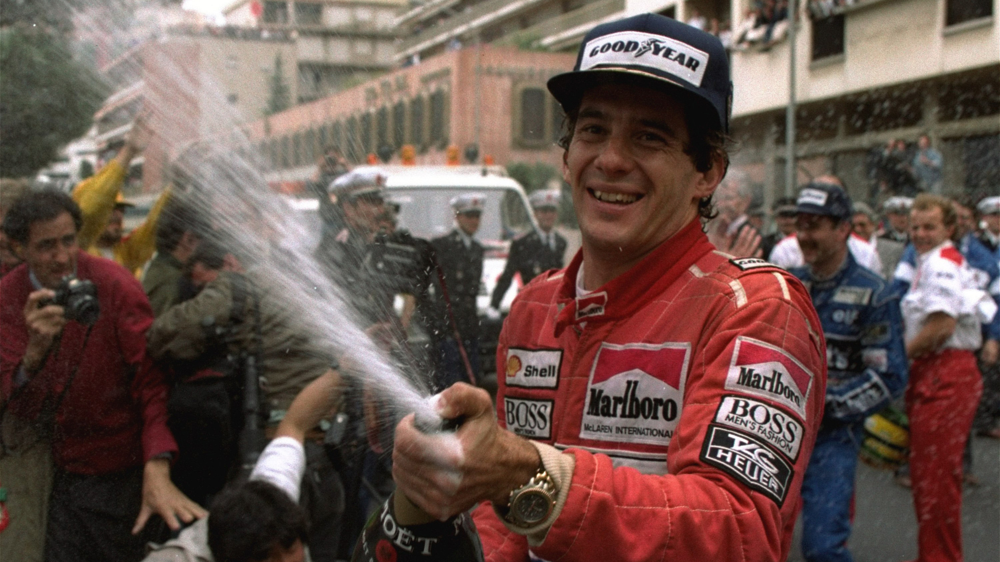

Ayrton Senna
by Nick RaboneAyrton Senna was a Brazilian racing driver who won the Formula 1 World Drivers' Championship in 1988, 1990, and 1991. Ayrton achieved 41 Grands Prix wins, 65 pole positions, 19 fastest laps, 80 podiums and 614 points from 161 Grands Prix. He is considered to be one of the greatest F1 drivers in the history of the sport.
Ayrton began in karting and moved up to open-wheel racing in 1981, later winning the 1983 British Formula 3 Championship. He made his Formula 1 debut with Toleman in 1984, before moving to Lotus in 1985, winning 6 Grands Prix over the next three seasons.
In 1988 he joined McLaren and won 8 Grands Prix that year claiming his first World Championship. Thereafter Ayrton won his second and third championships in 1990 and 1991 with McLaren to become a three times World Champion.
In 1992 Williams Renault began to dominate Formula 1 but despite this Ayrton scored a brilliant victory at the 1992 Monaco Grand Prix fighting off Nigel Mansell.
In 1993, despite being in an under-powered McLaren, Ayrton finished as runners-up in the championship winning 5 races that year where he was without doubt the best driver.
Ayrton fufilled his wish to join Williams in 1994. Sadly though disaster struck at the San Marino Grand Prix where Ayrton lost his life.
Ayrton was recognised for his qualifying speed over one lap, and from 1989 until 2006 he held the record for most pole positions. He was also acclaimed for his wet weather performances, such as the 1984 Monaco Grand Prix, the 1985 Portuguese Grand Prix, and the 1993 European Grand Prix.
He holds a record 6 victories at the Monaco Grand Prix, is the 5th-most successful driver of all time in terms of race wins and has won more races for McLaren than any other driver.
Ayrton Senna
Before Formula 1
1981 British Formula Ford 1600 Champion
1982 British Formula Ford 2000 Champion
1982 European Ford Ford 2000 Champion
1983 British Formula 3 Champion
1983 Macau Grand Prix Winner
Formula 1
1984 Toleman Hart (1 FL, 3 podiums) 13pts = 9th
1985 Lotus Renualt (2 wins, 7 poles, 3 FLs, 6 podiums) 38pts = 4th
1986 Lotus Renualt (2 wins, 8 poles, 8 podiums) 55pts = 4th
1987 Lotus Honda (2 wins, 1 pole, 3 FLs, 6 podiums) 57pts = 3rd
1988 McLaren Honda (8 wins, 13 poles, 3 FLs, 11 podiums) 90pts = 1st
1989 McLaren Honda (6 wins, 13 poles, 3 FLs, 7 podiums) 60pts = 2nd
1990 McLaren Honda (6 wins, 10 poles, 2 FLs, 11 podiums) 78pts = 1st
1991 McLaren Honda (7 wins, 8 poles, 2 FLs, 12 podiums) 96pts = 1st
1992 McLaren Honda (3 wins, 1 pole, 1 FL, 7 podiums) 50pts = 4th
1993 McLaren Ford (5 wins, 1 pole, 1 FL, 7 podiums) 73pts = 2nd
1994 Williams Renault (3 poles)